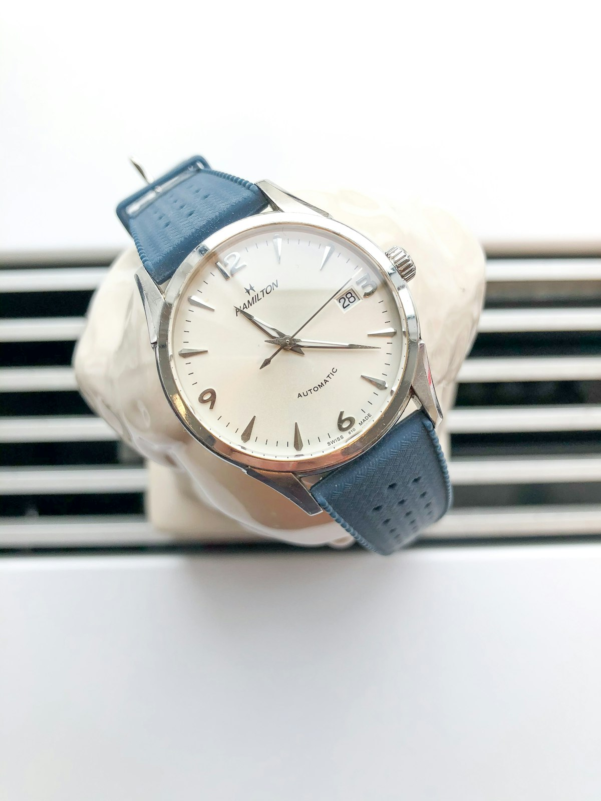

Solar Gnomonics
The Mechanics of Desert Sundials & Solar Azimuth Navigation
A mathematical masterclass in spherical trigonometry, gnomon angle calibration, and calculating local solar time in arid deserts.